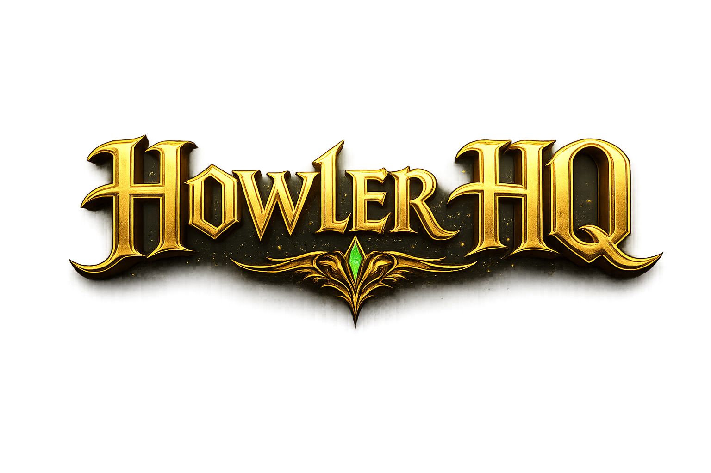

Howler HQ is more than just a name — it’s a growing pack. Built around the idea of connection, energy, and shared experiences, Howler HQ brings together gaming, outdoor adventure, and lifestyle content into one place.
Whether it’s intense late-night gaming sessions, exploring the outdoors, or pushing into new creative projects, the goal is simple: build something real. A place where people can show up, be part of something, and grow alongside the journey.
This isn’t just content — it’s a community in the making. A pack that evolves, adapts, and moves forward together.
NightHowler4916 is the creator behind Howler HQ — a gamer, builder, and explorer driven by the idea of turning passion into something bigger.
Starting with gaming and streaming, the vision continues to expand into new areas including outdoor content, real-world experiences, and long-term creative projects. Every stream, video, and idea is part of building something that lasts.
This journey isn’t about perfection — it’s about progression. Learning, improving, and pushing forward one step at a time.
If you're here, you're already part of the pack.